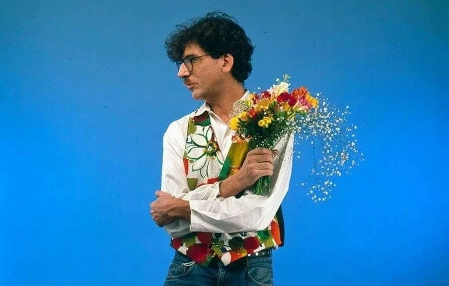

La historia de Charly
Biografía
Alberto G. Moreno (Buenos Aires, 23 de octubre de 1951), más conocido como Charly García, es un músico, cantautor, multinstrumentista, compositor y productor discográfico argentino, considerado una figura importante y vanguardista para la música popular argentina y latinoamericana. Nombrado "el padre del rock argentino", García es aclamado por su extensa obra discográfica, tanto en sus múltiples agrupaciones y como solista, por la complejidad compositiva de su música, abordando múltiples géneros, desde el folk rock, rock progresivo, rock sinfónico, avant garde, new wave, pop rock, pop barroco y synth pop, por su lírica transgresora y crítica hacia la sociedad moderna argentina, en especial durante la era de la dictadura militar, y por su personalidad rebelde y extravagante e incluso de liberación social, que ha acarreado atención notoria en los medios a lo largo de los años.
A fines de 1971, Charly fue enrolado por el Ejército para cumplir un año de servicio militar obligatorio, una institución por entonces era tradicional, pero que era rechazada por una parte considerable de la juventud, entre ellos quienes habían hecho del pelo largo un símbolo de rebeldía y cambio. Los jóvenes recurrían a los más variados artilugios para «salvarse de la colimba. Charly García no fue la excepción. Luego de ver frustrada su expectativa de salvarse por «número bajo» (en el sorteo preliminar), Charly recurrió a todas las artimañas posibles: recurrir a «acomodos» con funcionarios conocidos por sus padres (que al menos lograron que fuera enviado al regimiento de Campo de Mayo, en el conurbano de Buenos Aires); simular enfermedades y desmayos, físicas y mentales; desobedecer las órdenes; hacerle la vida imposible a los militares; etc. Como resultado de esas simulaciones, fue enviado al Hospital Militar, donde para hacer creíble su «personaje», tomó un frasco de anfetaminas que su madre le había llevado al hospital. La sobredosis le produjo un estado extremo de excitación, que lo hizo pensar que iba a morir. En esas condiciones, escribió de un tirón la canción que se convertiría en su primer éxito masivo apenas unos meses después: «Canción para mi muerte». Un incidente adicional sucedió de manera más o menos simultánea: Charly debía llevar una camilla con un cadáver a la morgue, pero en lugar de ello lo llevó al Casino de Oficiales generando un escándalo. Los militares entonces lo mandaron a su casa y pocos días después lo dieron de baja por padecer «neurosis histérica, personalidad esquizoide». Charly contó en detalle aquella experiencia en «Botas locas», que incluiría en el álbum Pequeñas anécdotas sobre las instituciones.
Siendo un adolescente, García fundó la banda de rock Sui Generis junto a su compañero de clase Nito Mestre a fines de los años '60. Juntos, publicaron tres exitosos álbumes de estudio, cuyas canciones se convirtieron en himnos para generaciones de argentinos, y se separaron en 1975 con un concierto en el Luna Park. García pasó a formar parte del supergrupo PorSuiGieco y fundó otra banda, La Máquina de Hacer Pájaros, con quienes publicó álbumes claves para instaurar el rock progresivo en la escena musical latinoamericana. Luego de separarse de ambos proyectos, García se embarcó a Brasil, volviendo a Argentina poco después para fundar Serú Girán a fines de los 70, que se convirtió en una de las bandas más importantes de la historia de la música argentina por su calidad musical y letrística, tanto así que han sido llamados "Los Beatles argentinos". Algunas de sus canciones incluían solapadas críticas hacia la dictadura militar que gobernaba el país en esa época. El grupo se disolvió en 1982, tras la publicación de cuatro álbumes de estudio y un último concierto en el estadio Obras Sanitarias.
Luego de componer la banda sonora de la película Pubis Angelical, y a la vez su propio disco, Yendo de la cama al living (1982), que fue un éxito en críticas, García inició una prolífica carrera solista, componiendo varias canciones generacionales de la música latina y expandiendo las barreras de la música pop. Su exitosa trilogía se completó con los discos de new wave Clics modernos (1983) y Piano Bar (1984), catalogados entre los mejores álbumes de la historia del rock argentino por la revista Rolling Stone.En los años posteriores, García trabajó en los proyectos Tango y Tango 4 junto a Pedro Aznar y publicó una segunda exitosa trilogía con Parte de la religión (1987), Como conseguir chicas (1989) y Filosofía barata y zapatos de goma (1990). Al mismo tiempo, empezó a protagonizar varios escándalos mediáticos por su actitud exorbitante y extravagante, y sufrió sus primeros accidentes de salud a causa de su drogadicción creciente durante la década de los 90. Hacia fines de los 90 e inicios de los 2000, García entró en su controversial y caótica era Say no More, en la que sus discos fueron pobremente recibidos por la crítica y las ventas, pero sus conciertos eran un éxito absoluto. A partir del lanzamiento de Rock and Roll YO (2003), se tomó un largo hiato, con apariciones esporádicas para rehabilitarse de sus problemas de adicción. Regresó a la escena pública con su último álbum en vivo El concierto subacuático (2010), y publicó los álbumes Kill Gil (2010) y Random (2017).
Su canción «Rasguña las piedras», grabada por Sui Generis fue considerada en 2002 como la tercera mejor canción de todos los tiempos del rock argentino, y la 53a. del rock hispanoamericano. Las siguientes canciones de su autoría también han sido consideradas entre las 100 mejores del rock argentino: «Seminare», «Canción para mi muerte», «Demoliendo hoteles», «Los dinosaurios», «Yo no quiero volverme tan loco», «No llores por mi, Argentina», «Chipi chipi» y «Cerca de la revolución».
En 2009 recibió el premio Grammy a la Excelencia Musical.En 1985 obtuvo el Premio Konex de Platino, como mejor instrumentista de rock de Argentina en la década de 1975-1984.[14] Ganó tres veces el Premio Gardel de Oro (2002, 2003 y 2018), el más importante del país en lo musical.En 2010 fue declarado Ciudadano Ilustre de la Ciudad Autónoma de Buenos Aires por la Legislatura Porteña,y en 2013 recibió el título de Doctor Honoris Causa de la Universidad Nacional de General San Martín.
Género
New wave «nueva ola» es un término global para varios estilos rock/pop de fines de la década de 1970 y mediados de la década de 1980, además de ser un estilo musical con vínculos con el punk y ciertos géneros del rock de los años 1970. Inicialmente, al igual que con el posterior rock gótico, la new wave se mantuvo prácticamente análoga al post-punk antes de ramificarse como un género distintamente identificado. Posteriormente engendró subgéneros y fusiones, incluyendo new romantic y rock gótico.
Instrumentos comunes: guitarra electrica, batería acústica, batería electrónica, bajo, sintetizadores, secuenciador y caja de ritmos.